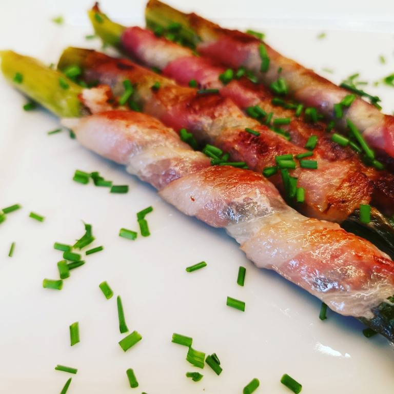

Baconbe tekert spárga
Hozzávalók:
- 1 csomag zöldspárga
- 10 szelet bacon
- só ízlés szerint
- bors ízlés szerint
- fokhagymapor ízlés szerint
- 2 ek olívaolaj

Elkészítés
- A spárgák fás végét tördeljük le. Utána helyezzük egy sütőpapíros tepsire.
- Ízesítsük fokhagymaporral, sóval és borssal. Kb. hármasával tekerjük fel őket egy baconbe. Egymás mellé helyezzük őket a tepsiben és mehet a sütőbe 20-25 percre 200 fokon.
- Érdemes közben forgatni őket, hogy a bacon mindenhol ropogjon!
- Sütés hőfoka: 200 °C
Sütés módja: alul-felül sütés
Sütés ideje: 20 perc